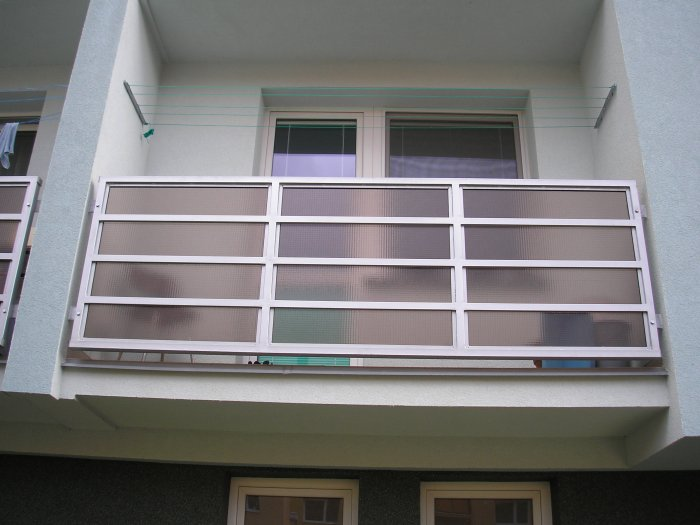

Kovovýroba & SvařováníČSN EN 1090-2, ISO 9001
Komplexní kovovýroba a montáže
Zakázková kovovýroba od technické přípravy a dělení materiálu až po finální montáž ocelových konstrukcí a technologických celků.
Výrobní kapacity: Kusová, malosériová i velkosériová zámečnická výroba
Zpracovávané materiály: Konstrukční oceli, nerezové oceli, hliníkové slitiny